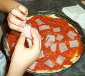
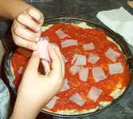

Pizza Prosciutto

Pizza Prosciutto
-
Ingredientes:
- 200 g de agua
- 50 g de aceite
- 1 cucharadita de sal
- 1 nuez de levadura prensada
- 400 g de harina
- 1 bote de tomate frito
- 100 g de jamón York
- 100 g de mozzarella rallada
Preparación:
Mezcla los líquidos calentándolos ligeramente. Añade la levadura y la harina, mezclando hasta que la masa adquiera consistencia. Estírala con el rodillo hasta que quede muy fina y colócala sobre una bandeja de horno engrasada con aceite.
 

Pon los ingredientes elegidos sobre ella, primero el tomate, después el jamón cortado en tiras y por último el queso. Puedes dejarla reposar una media hora antes de hornearla, pero no es necesario. Introducela en el horno precalentado a 250 ºC y baja la temperatura a 225 ºC. Hornea unos 15 o 20 minutos.